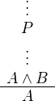
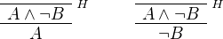
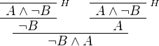
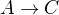
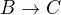
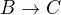
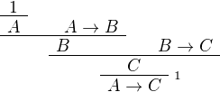
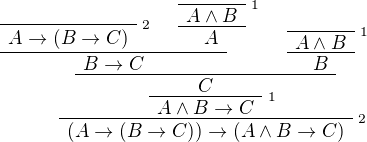
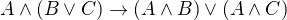
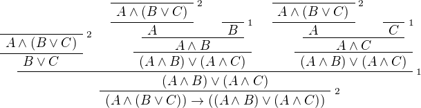

Logic and Proof
4 Propositional Logic in Lean
In this chapter, you will learn how to write proofs in Lean. We will start with a purely mechanical translation that will enable you to represent any natural deduction proof in Lean. We will see, however, that such a style of writing proofs is not very intuitive, nor does it yield very readable proofs. It also does not scale well.
We will then consider some mechanisms that Lean offers that support a more forward-directed style of argumentation. Since these proofs look more like informal proofs but can be directly translated to natural deduction, they will help us understand the relationship between the two.
4.1 Expressions for Propositions and Proofs
At its core, Lean is what is known as a type checker. This means that we can write expressions and ask the system to check that they are well formed, and also ask the system to tell us what type of object they denote. Try this:
In the online version of this text, you can press the "Try it yourself" button to copy the example to the editor window, press the "play" button, and then hover over the markers on the left to read the messages.
In the example, we declare three variables ranging over propositions,
and ask Lean to check the expression A ∧ ¬ B → C. The output of the
check command is A ∧ ¬ B → C : Prop, which asserts that A ∧ ¬ B →
C is of type Prop. In Lean, every well-formed expression has a
type.
The logical connectives are rendered in unicode. The following chart shows you how you can type these symbols in the editor, and also provides ascii equivalents, for the purists among you.
| Unicode | Ascii | Emacs |
|---|---|---|
| true | ||
| false | ||
| ¬ | not | \not, \neg |
| ∧ | /\ | \and |
| ∨ | \/ | \or |
| → | -> | \to, \r, \implies |
| ↔ | <-> | \iff, \lr |
| ∀ | forall | \all |
| ∃ | exists | \ex |
| λ | fun | \l, \fun |
| ≠ | ~= | \ne |
So far, we have only talked about the first seven items on the
list. We will discuss the quantifiers, lambda, and equality later. Try
typing some expressions and checking them on your own. You should try
changing one of the variables in the example above to D, or
inserting a nonsense symbol into the expression, and take a look at
the error message that Lean returns.
In addition to declaring variables, if P is any expression of type
Prop, we can declare the hypothesis that P is true:
Formally, what is going on is that any proposition can be viewed as a
type, namely, the type of proofs of that proposition. A hypothesis, or
premise, is just a variable of that type. Building proofs is then a
matter of writing down expressions of the write type. For example, if
P is any expression of type A ∧ B, then and.left P is an
expression of type A, and and.right P is an expression of type
B. In other words, if P is a proof of A ∧ B, and and.left P is
a name for the proof you get by applying the left elimination rule for
and:

Similarly, and.right P is the proof of B you get by applying the
right elimination rule. So, continuing the example above, we can write
The two expressions represent, respectively, these two proofs:

Notice that in this way of representing natural deduction proofs,
there are no "free floating" hypotheses. Every hypothesis has a
label. In Lean, we will typically use expressions like H, H1,
H2, … to label hypotheses, but you can use any identifier you
want.
If P₁ is a proof of A and P₂ is a proof of B, then and.intro
P₁ P₂ is a proof of A ∧ B. So we can continue the example above:
This corresponds to the following proof:

What about implication? The elimination rule is easy: if P₁ is a
proof of A → B and P₂ is a proof of A then P₁ P₂ is a proof of
B. Notice that we do not even need to name the rule: you just write
P₁ followed by P₂, as though you are applying the first to the
second. If P₁ and P₂ are compound expressions, put parentheses
around them to make it clear where each one begins and ends.
Lean adopts the convention that applications associate to the
left, so that an expression H1 H2 H3 is interpreted as (H1 H2)
H3. Implications associate to the right, so that A → B → C is
interpreted as A → (B → C). This may seem funny, but it is a
convenient way to represent implications that take multiple
hypotheses, since an expression A → B → C → D → E means that E
follows from A, B, C, and D. So the example above could be
written as follows:
Notice that parentheses are still needed in the expression H1 (H2
H3).
The implication introduction rule is the tricky one, because it can
cancel a hypothesis. In terms of Lean expressions, the rule translates
as follows. Suppose A and B have type Prop, and, assuming H is
the premise that A holds, P is proof of B, possibly involving
H. Then the expression assume H : A, P is a proof of A → B. For
example, we can construct a proof of A → A ∧ A as follows:
Notice that we no longer have to declare A as a premise. The word
assume makes the premise local to the expression in parentheses, and
after the assumption is made, we can refer to H. Given the
assumption H : A, and.intro H H is a proof of A ∧ A, and so the
expression assume H : A, and.intro H H is a proof of A → A ∧
A. In this case, we could leave out the parentheses because the
expression is unambiguous:
Above, we proved ¬ B ∧ A from the premise A ∧ ¬ B. We can instead
obtain a proof of A ∧ ¬ B → ¬ B ∧ A as follows:
All we did was move the premise into a local assume.
(By the way, the assume command is just alternative syntax for the
lambda symbol, so we could also have written this:
You will learn more about the lambda symbol later.)
4.2 Using example and show
Let us introduce a new Lean command, example. This command tells
Lean that you are about to prove a theorem, or, more generally, write
down an expression of the given type. It should then be followed by
the proof or expression itself.
When given this command, Lean checks the expression after the
:= and makes sure it has the right type. If so, it accepts
the expression as a valid proof. If not, it raises and error.
Because the example command provides information as to the type of
the expression that follows (in this case, the proposition being
proved), it sometimes enables us to omit other information. For
example, we can leave off the type of the assumption:
Because Lean knows we are trying to prove an implication with premise
A ∧ ¬ B, it can infer that when we write assume H, the identifier
H labels the assumption A ∧ ¬ B.
We can also go in the other direction, and provide the system with
more information, with the word show. If A is a proposition and
P is a proof, the expression "show A, from P" means the same
thing as P alone, but it signals the intention that P is a proof
of A. When Lean checks this expression, it confirms that P really
is a proof of A, before parsing the expression surrounding it. So,
in our example, we could also write:
We could even annotate the smaller expressions and.right H and
and.left H, as follows:
This is a good place to mention that Lean generally ignores whitespace, like indentation and returns. We could have written the entire example on a single line. In general, we will adopt conventions for line breaks and indentation that shows the structure of a proof and makes it easier to read.
Although in the examples above the show commands were not necessary,
there are a number of good reasons to use it. First, and perhaps most
importantly, it makes the proofs easier for us humans to read. Second,
it makes the proofs easier to write: if you make a mistake in a
proof, it is easier for Lean to figure out where you went wrong and
provide a meaningful error message if you make your intentions
clear. Finally, proving information in the show clause often makes
it possible for you to omit information in other places, since Lean
can infer that information from your stated intentions.
There are notational variants. Rather than declare variables and premises beforehand, you can also present them as "arguments" to the example, followed by a colon:
There are two more tricks that can help you write proofs in Lean. The
first is using sorry, which is a magical term in Lean which provides
a proof of anything at all. It is also known as "cheating." But
cheating can help you construct legitimate proofs incrementally: if
Lean accepts a proof with sorry's, you know that you are on the
right track so far. All you need to do is replace each sorry with a
real proof to finish the task.
proof is correct,
modulo the fact that each sorry should be replaced by a real proof.
The second trick is the use of placeholders, represented by the
underscore symbol. When you write an underscore in an expression, you
are asking the system to try to fill in the value for you. This falls
short of calling full-blown automation to prove a theorem; rather, you
are asking Lean to infer the value from the context. If you use an
underscore where a proof should be, Lean typically will not fill in
the proof, but it will give you an error message that tells you what
is missing. This will help you write proof terms incrementally, in a
backward-driven fashion. In the example above, try replacing each
sorry by an underscore, _, and take a look at the resulting error
messages. In each case, the error tells you what needs to be filled
in, and the variables and hypotheses that are available to you at that
stage.
One more tip: if you want to delimit the scope of variables or
premises introduced with the variables and premises commands, put
them in a block that begins with the word section and ends with the
word end. We will use this mechanism below.
4.3 Building Natural Deduction Proofs
In this section, we describe a mechanical translation from natural deduction proofs, by giving a translation for each natural deduction rule. We have already seen some of the correspondences, but we repeat them all here, for completeness.
4.3.1 Implication
We have already explained that implication introduction is implemented
with assume, and implication elimination is written as application.
Since every example begins by declaring the necessary propositional variables, we will henceforth suppress that declaration in the text.
4.3.2 Conjunction
We have already seen that and introduction is implemented with
and.intro, and the elmination rules are and.left and and.right.
4.3.3 Disjunction
The or introduction rules are given by or.inl and or.inr.
The elimination rule is the tricky one. To prove C from A ∨ B, you
need three arguments: a proof P of A ∨ B, a proof P₁ of C from
A, and a proof P₂ of C from B. Using line breaks and
indentation to highlight the structure as a proof by cases, we can
write it with the following form:
4.3.4 Negation
Internally, negation ¬ A is defined by A → false, which you can
think of as saying that A implies something impossible. The rules
for negation are therefore similar to the rules for implication. To
prove ¬ A, assuming A and derive a contradiction.
If you have proved a negation ¬ A, you can get a contradition by
applying it to a proof of A.
4.3.5 Truth and falsity
The ex falso rule is called false.elim:
There isn't much to say about true beyond the fact that it is
trivially true:
4.3.6 Bi-implication
The introduction rule for "if and only if" is iff.intro.
As usual, we have chosen indentation to make the structure
clear. Notice that the same label, H, can be used on both branches,
with a different meaning in each, because the scope of an assume is
limited to the expression in which it appears.
The elimination rules are iff.elim_left and iff.elim_right:
4.3.7 Reductio ad absurdum (proof by contradiction)
Finally, there is the rule for proof by contradition, which we will discuss in greater detail in Chapter 5. It is included for completeness here.
The rule is called by_contradiction. It has one argument, which is a
proof of false from ¬ A. To use the rule, you have to ask Lean to
allow classical reasoning, by writing open classical. You can do
this at the beginning of the file, or any time before using it. It you
say open classical in a section, it will remain in scope for that section.
4.3.8 Examples
In the last chapter, we constructed the following proof  from
 and :
and :

We can model this in Lean as follows:
Notice that we simply declare the uncanceled hypotheses as premises.
We also constructed the following proof:

Here is how it is written in Lean:
This works because and.left H2 is a proof of A, and and.right H2
is a proof of B.
Finally, we constructed the following proof of :

Here is a version in Lean:
In fact, bearing in mind that assume is alternative syntax for the
symbol λ, and that Lean can often infer the type of an assumption,
we can make the proof remarkably brief:
The proof is cryptic, though. Using such a style makes proofs hard to write, read, understand, maintain, and debug. In the next section we will describe a remarkably simple device that makes it much easier to understand what is going on.
4.4 Forward Reasoning
Lean supports forward reasoning by allowing you to write proofs using
the have command.
Writing a proof with have H : A, from P, ... H ... has the same
effect as writing ... P .... This have command checks that P is
a proof of A, and then give you the label H to use in place of
P. Thus the last line of the previous proof can be thought of as
abbreviating show C, from H2 (H1 H), since H3 abbreviates H1
H. Such abbreviations can make a big difference, especially when the
proof P is very long.
There are a number of advantages to using have. For one thing, it
makes the proof more readable: the example above states B explicitly
as an auxiliary goal. It can also save repetition: H3 can be used
repeatedly after it is introduced, without duplicating the
proof. Finally, it makes it easier to construct and debug the proof:
stating B as an auxiliary goal makes it easier for Lean to deliver
an informative error message when the goal is not properly met.
In the last section, we considered the following proof:
Using have, it can be written more perspicuously as follows:
We can be even more verbose, and add another line:
Adding more information doesn't always make a proof more readable; when the individual expressions are small and easy enough to understand, spelling them out in detail can introduce clutter. As you learn to use Lean, you will have to develop your own style, and use your judgment to decide which steps to make explicit.
Here is how some of the basic inferences look, when expanded with
have. In the and-introduction rule, it is a matter showing each
conjunct first, and then putting them together:
Compare that with this version, which instead states first that we
will use the and.intro rule, and then makes the two resulting goals explicit:
Once again, at issue is only readability. Lean does just fine with the following short version:
When using the or-elimination rule, it is often clearest to state the relevant disjunction explicitly:
Here is a have-structured presentation of an
example from the previous section:
4.5 Definitions and Theorems
Lean allows us to name definitions and theorems for later use. For example, here is a definition of a new "connective":
As with the example command, it does not matter whether the
arguments A, B, and C are declared beforehand with the
variables command, or with the definition itself. We can then apply
the definition to any expressions:
Later, we will see more interesting examples of definitions, like the following function from natural numbers to natural numbers, which doubles its input:
What is more interesting right now is that Lean also allows us to name theorems, and use them later, as rules of inference. For example, consider the following theorem:
Once we have defined it, we can use it freely:
It is annoying in this example that we have to give the arguments C
and ¬ D explicitly, because they are implicit in H1. In fact, Lean
allows us to tell this to Lean in the definition of and_comm:
Here the squiggly braces indicate that the arguments A and B are
implicit, which is to say, Lean should infer them from the context
when the theorem is used. We can then write the following instead:
Indeed, Lean's library has a theorem, and.comm, defined in exactly
this way.
By the way, we could avoid the assume step in the proof of
and.comm by making the hypothesis into an argument:
The two definitions yield the same result.
Definitions and theorems are important in mathematics; they allow us
to build up complex theories from fundamental principles. Instead of
the word theorem, you can (equivalently) use lemma, proposition,
or corollary.
What is interesting is that in interactive theorem proving, we can even define familiar patterns of inference. For example, all of the following inferences were mentioned in the last chapter:
In fact, Lean's library defines or.resolve_left, or.resolve_right,
and absurd. We used the namespace command to avoid naming
conflicts, which would have raised an error.
When we ask you to prove basic facts from propositional logic in Lean, as with propositional logic, our goal is to have you learn how to use Lean's primitives. As a result, for those exercises, you should not use facts from the library. As we move towards real mathematics, however, you can use facts from the library more freely.
Let us now describe a few bells and whistles that make proofs look
prettier. for one thing, you can use subscripted numbers with a
backslash. For example, you can write H₁ by typing H\1. The labels
are irrelevant to Lean, so the difference is only cosmetic.
Another feature is that you can use suppose instead of assume and
omit the label. You can then refer back to the last anonymous
assumption using the keyword this:
Alternatively, you can refer back to unlabeled assumptions by putting them in backticks:
In that case, if you prefer to use the word assume, you can avoid
the labels by using backticks there too:
You can also use the word have without giving a label, and refer
back to them using the same conventions. Here is an example that uses
these features:
Finally, you can add comments to your proofs in two ways. First, any
text after a double-dash -- until the end of a line is ignored by
the Lean processor. Second, any text between /- and -/ denotes a
block comment, and is also ignored. You can nest block comments.
4.6 Exercises
Prove the following in Lean: